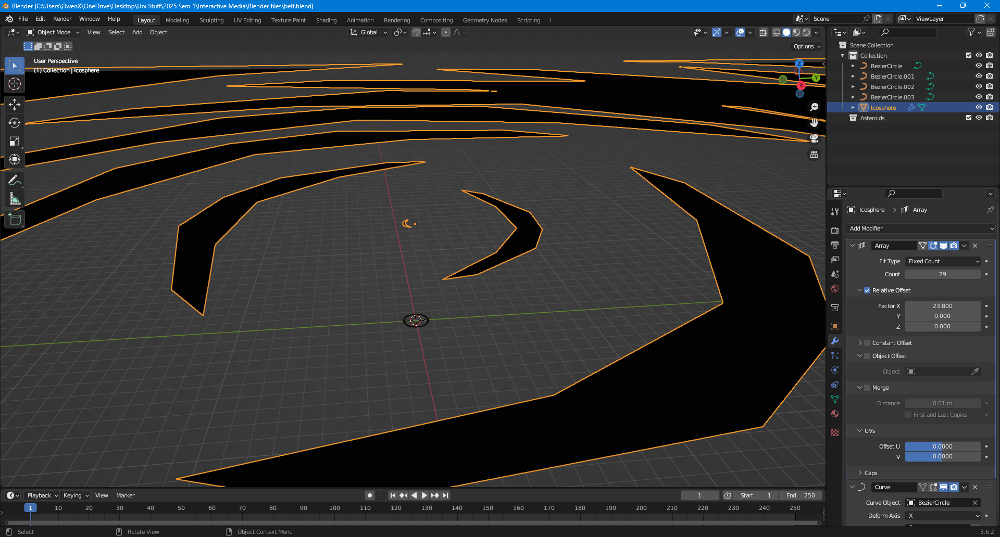
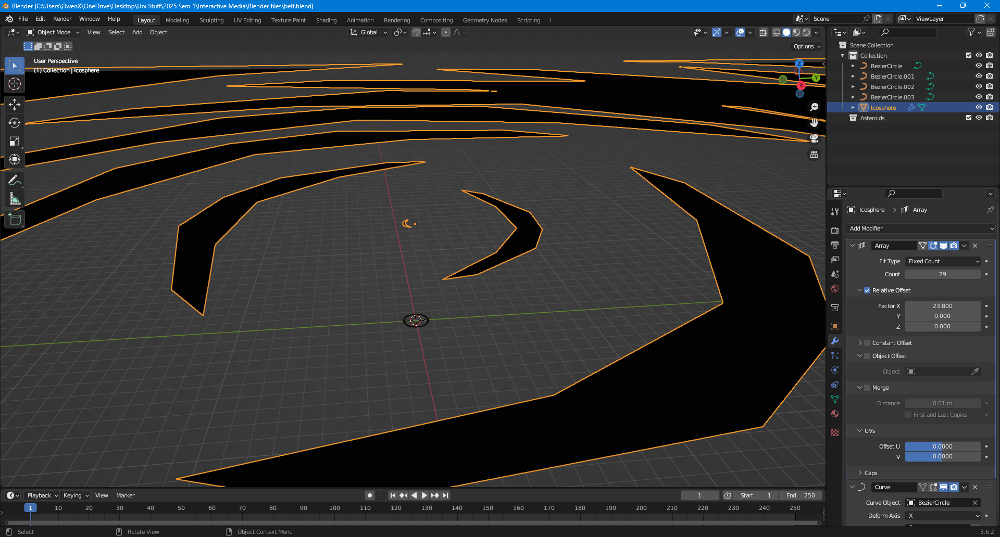

Class Works

Early Concepts
3D Development
 

Home Screen Generation
I liked the method of navigation within this webpage through using orbit controls, also the stylized aesthetic was inspiring
The main thing was the solar system style and using lines to represent orbits, I felt that it was a nice touch